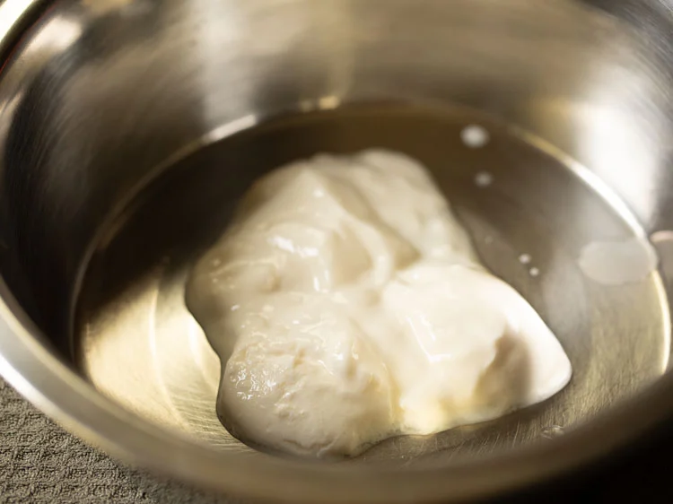
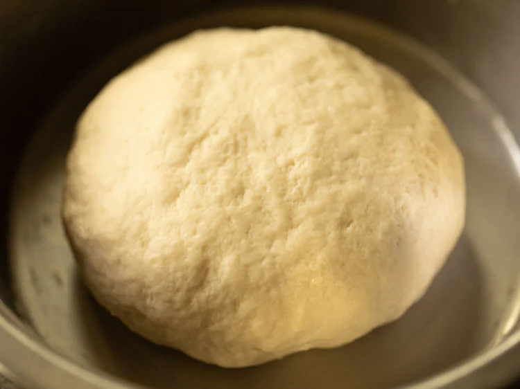
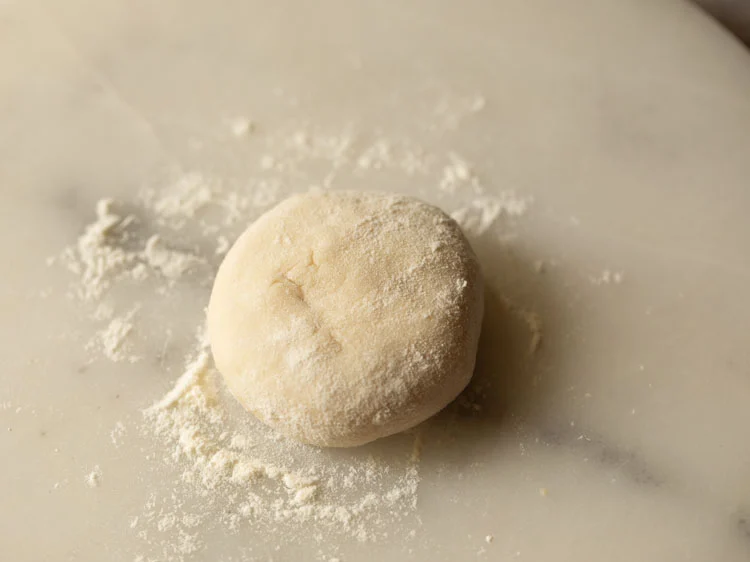
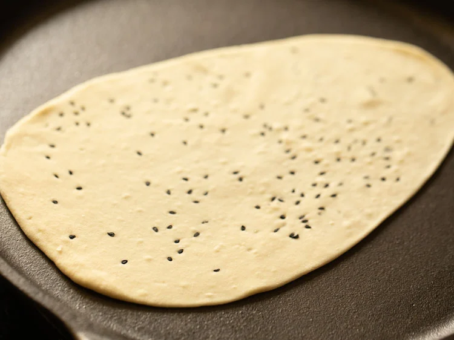
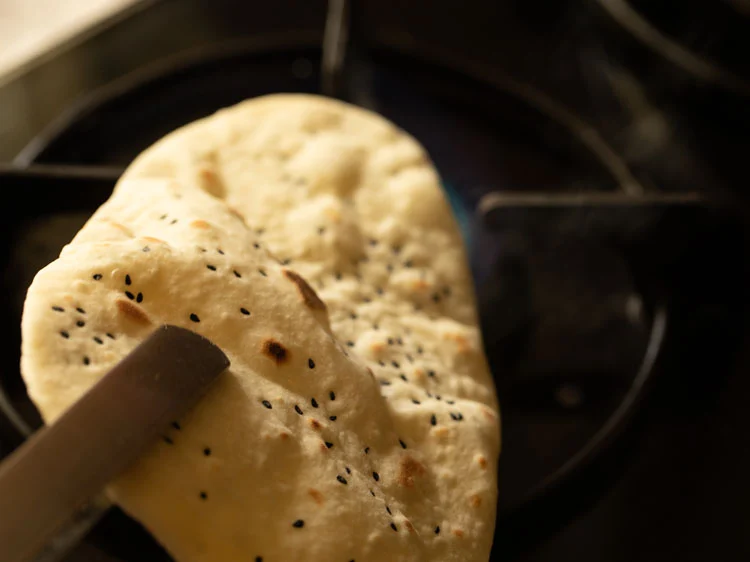
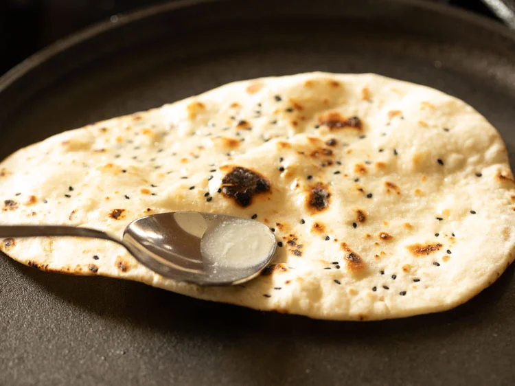

1. In a mixing bowl take ¼ cup fresh curd or yogurt. For a vegan naan, use almond or cashew yogurt.
2. Add 1 teaspoon sugar, 1 teaspoon baking powder and 1 pinch baking soda. If you do not have baking soda, then skip it.
3. With a spoon mix all the ingredients very well till the sugar dissolves.
4. Now add 2 cups all-purpose flour, 1 teaspoon salt or add as required in the bowl. You can also use a mix of whole wheat flour and all purpose flour.
5. Mix again with a spoon so that the salt is evenly distributed in the flour.
6. Make a well in the center and add 2 tablespoons oil. Note that you can even add butter instead of oil. Use any neutral-flavored oil.
7. Add ¼ to ⅓ cup water or add as required, After that First mix and then begin to knead.
8. Knead to a smooth and soft dough. If the curd is thick, then you may need to add more water. In case the dough looks dry, then add some more water and knead.
If it becomes sticky, then sprinkle some flour and knead again. You should get a soft stretchy dough. You can even use a stand mixer to knead the dough.
9. Flatten the dough. You can even spread some oil all over the dough if you want. Place in the same bowl.
10. Place a moist kitchen towel or napkin completely covering on the dough. Cover the bowl with a lid and let the dough leaven for 2 hours.
11. Make medium-sized balls from the dough After that Flatten slightly and sprinkle some flour on the dough as well as on the rolling board.
12. Sprinkle some nigella seeds (kalonji) or sesame seeds (black or white) or melon seeds (magaz) on the rolled dough. I have added nigella seeds as they give a good flavor.
13. Roll to a 6 or 7 inches elongated circle.Roll the top side to get a tapering edge. You can even gently pull the dough with your hands to get this pointed edge. The naan will have a tear-shaped form.
13. Heat a heavy griddle or tawa or skillet and keep on medium-high to high heat. Place the naan bread ready on the hot tawa or skillet or griddle.
14. Keep the flame to medium-high or high and begin to cook the naan bread. Let one side get partly cooked. You will see a few air pockets on the naan.
15. When you start seeing the air-pockets, then flip using tongs or spatula. Now cook the second side on medium-high to high flame.
16. Again you will see air-pockets appearing on the second side. Flip when you see many air-pockets on the naan. (this photo is for reference only). You will see that the second side has cooked more than the first side. The second side has to be cooked more than the first side.
17. You have to flip it using tongs and place it directly on the stovetop flame. Grill the first side on the flame till you see some charred spots and blisters.
18. Turn over and roast the second side too till you see some charred spots. Avoid fire roasting too much as then the naan becomes crispy.
19. Place it on a plate or tray. Spread or brush with some softened butter or melted butter. You can even use ghee (clarified butter). For a vegan version use neutral flavored oil. You can even skip using butter or oil entirely.
